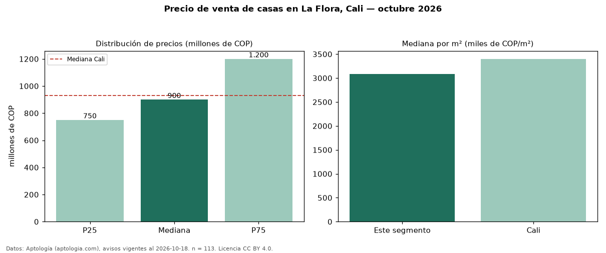

Precio de venta de casas en La Flora, Cali — octubre 2026
COP 900 millones es el precio mediano de casas en venta en La Flora, Cali (n = 113 avisos). Prácticamente coincide con la mediana de Cali para casas (COP 930 millones). Por metro cuadrado, la mediana es COP 3,08 millones/m² (n = 112 avisos con área), 9 % por debajo de Cali (COP 3,40 millones/m²). El área mediana anunciada es 320 m². El segmento con más oferta es el de 3 o más habitaciones (112 avisos, mediana COP 910 millones). La administración mediana declarada es COP 618.350 al mes (n = 18). Por precio mediano es el puesto 14 de 32 barrios de Cali con al menos 30 avisos de casas en venta (COP): en la franja media. El estrato más frecuente es 5 (91 % de los avisos con estrato). Datos: Aptología (aptologia.com), CC BY 4.0 — https://www.aptologia.com/casas-en-venta/cali/la-flora. Archivos: PDF, CSV con las cifras y gráfica PNG.

| Avisos únicos | 113 |
|---|---|
| Percentil 25 | COP 750.000.000 |
| Mediana | COP 900.000.000 |
| Percentil 75 | COP 1.200.000.000 |
| Mediana por m² | COP 3.083.333 |
Fuente: avisos vigentes de portales inmobiliarios recopilados por Aptología, deduplicados (mínimo 30 avisos únicos por celda). Precios pedidos, no cerrados. Fecha: 2026-10-18.